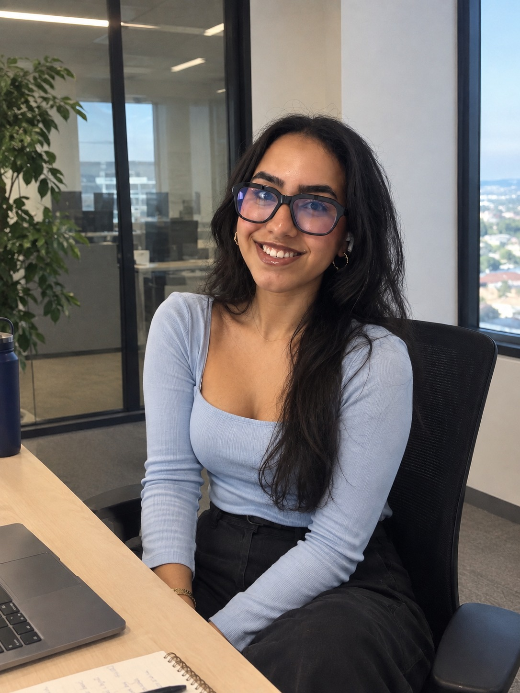

Passionnée par la transformation de données brutes en indicateurs stratégiques. Maîtrise de la chaîne BI complète et spécialiste Machine Learning en formation Master A2IA.

Étudiante en Master A2IA à l'Université de Rouen et alternante Data Analyst / BI chez King Jouet, je me spécialise dans l'intersection entre l'intelligence artificielle et l'analyse de données. Pour moi, chaque dataset est une histoire qui attend d'être racontée.
De mes expériences chez Linkt, Corsica Ferries et Wafa IMA Assistance, j'ai appris que la vraie valeur d'un data analyst n'est pas dans les chiffres, mais dans les décisions qu'ils éclairent.
Quand je ne suis pas en train d'explorer des datasets, j'aime participer à des hackathons (dont j'ai remporté un à l'Université de Corse ! 🏆) et contribuer à des projets académiques ambitieux.
"Transformer les informations en solutions concrètes et utiles, capables d'avoir un impact technologique positif."
En alternance au siège de King Jouet, j'interviens sur le reporting et l'analyse de données pour accompagner les équipes dans leur pilotage.
Au sein de Linkt, opérateur télécom B2B, j'ai restructuré le reporting Power BI en collaboration avec les départements Production et DAF. Après des réunions avec les managers pour identifier leurs besoins, j'ai défini les indicateurs à suivre afin de piloter tout le cycle de production, de la réception de la commande jusqu'à l'intervention.
Comment garantir la fiabilité d'un système de réservation traitant des milliers de transactions quotidiennes ? Lors de mon stage chez Corsica Ferries, j'ai conçu un algorithme de détection d'anomalies pour identifier en temps réel les erreurs techniques et les comportements atypiques. De l'extraction des données en SQL au nettoyage rigoureux sous Python (Feature Scaling), j'ai mis en place une approche statistique basée sur la distance euclidienne et le Z-score. Ce projet s'est conclu par la création d'un système d'alerte automatisé, offrant aux équipes techniques une réactivité accrue face aux incidents critiques.
Au sein du leader de l'assistance au Maroc, j'ai accompagné la direction dans la modernisation de ses outils de pilotage. Ma mission principale a consisté à centraliser et fiabiliser les flux de données provenant des pôles Médical, Technique et Voyage. J'ai conçu et automatisé des dashboards interactifs sous Power BI, permettant un suivi en temps réel des KPIs clés. Ce projet m'a permis de maîtriser l'ensemble de la chaîne BI, de la Data Quality au Data Storytelling.
Projet de Deep Learning réalisé en binôme : un système de reconnaissance des émotions faciales (7 classes) entraîné sur le dataset FER2013, avec inférence en temps réel via webcam. Livrables : un notebook Jupyter/Colab et un rapport académique rédigé en LaTeX à partir des vrais logs d'entraînement.
Lauréate du Hackathon de l'Université de Corse, j'ai co-conçu un prototype d'IA visant à révolutionner la création d'applications mobiles. Le défi ? Automatiser le choix du design pour les utilisateurs de GoodBarber. Nous avons développé un algorithme de Machine Learning capable de prédire les préférences esthétiques d'un utilisateur en fonction de son secteur d'activité et de ses interactions. Ce projet démontre ma capacité à innover sous pression et à transformer un besoin business en une solution technique concrète et récompensée.
L'objectif de ce projet universitaire était de simplifier le choix des utilisateurs face à l'immensité du catalogue IMDb. En équipe, nous avons développé une application Android intégrant un moteur de recommandation « Content-Based ». Mon rôle s'est concentré sur la partie Data Engineering : vectorisation des métadonnées (genres, synopsis, notes) et calcul de similarité. Grâce à l'implémentation de mesures de distances géométriques, l'application suggère des films avec une précision personnalisée selon les préférences de l'utilisateur.
Passionnée par la data visualisation, j'ai réalisé un projet complet d'analyse de données sportives sur trois saisons de la Ligue des Champions. Le but était de fournir aux recruteurs un outil clé en main pour comparer les performances des joueurs. J'ai orchestré l'ensemble du processus ETL : de la collecte des données brutes à leur transformation en indicateurs de performance (KPI) clairs. Le résultat est un dashboard interactif sous Power BI permettant une analyse stratégique fluide et visuelle.
Dans le cadre de ma Licence, j'ai développé CorsiButega, une application desktop complète dédiée à la gestion d'une épicerie. L'enjeu était de créer une interface intuitive capable de gérer des stocks, des ventes et des clients de manière fluide et sécurisée. Pour garantir la maintenabilité et l'évolutivité du code, j'ai implémenté l'architecture MVC (Modèle-Vue-Contrôleur). Ce projet m'a permis de perfectionner ma maîtrise du langage Java et de concevoir des interfaces graphiques réactives avec JavaSwing, tout en gérant la persistance des données.
De Tanger à Rouen, en passant par la Corse — mon parcours en data n'a pas été un long fleuve tranquille, mais c'est ce qui fait ma force. En quelques minutes, je vous raconte qui je suis, ce que je sais faire, et pourquoi la data me passionne vraiment.
Si la vidéo ne s'affiche pas, ouvrez-la sur YouTube.
Alternante Data Analyst / BI chez King Jouet, je suis toujours ravie d'échanger sur la data et l'IA.